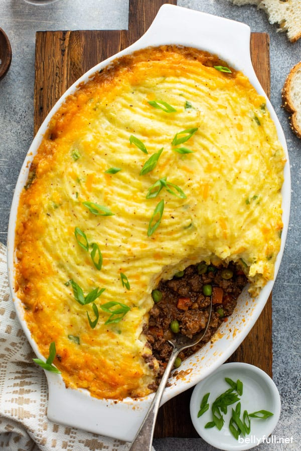

Shepards Pie

Description
Lasagna is a wide, flat sheet of pasta. Lasagna can refer to either the type of noodle or to the typical lasagna dish which is a dish made with several layers of lasagna sheets with sauce and other ingredients, such as meats and cheese, in between the lasagna noodles.
Originally, the word lasagna was used to describe a pot in which food was being cooked rather than the pasta itself. Lasagna recipes have been around for ages, dating back to as early as the thirteenth century. Today, lasagnas come in all kinds of varieties from veggies and cream sauces to traditional sauce and cheese lasagnas as well as meat lasagnas.
Originated in Italy during the middle ages, lasagna has been attributed to the city of Naples.
Ingredients
- 1 lb lean ground beef
- 1 cup chopped yellow onion
- 1 can crushed tomato paste
- 2lb russet potatoes
- 8 tablespoons unsalted butter
Steps
- Add the oil to a large skillet and place it over medium-high heat for 2 minutes. Add the onions. Cook 5 minutes, stirring occasionally.
- Add the oil to a large skillet and place it over medium-high heat for 2 minutes. Add the onions. Cook 5 minutes, stirring occasionally.
- Place the potatoes in a large pot. Cover the potatoes with water. Bring the water to a boil. Reduce to a simmer. Cook until potatoes are fork tender, 10-15 minutes.
- If the baking dish looks very full, place it on a rimmed baking sheet so that the filling doesn’t bubble over into your oven. Bake uncovered for 25-30 minutes.** Cool for 15 minutes before serving.